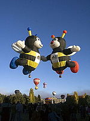

Balão de Hélio Tripulado
São bastante raros hoje em dia devido aos seus custos elevados. São balões "fechados" onde a ascensão se dá pelo enchimento de gás hélio. Sendo este gás mais leve que o ar atmosférico, o balão eleva-se a grandes altitudes, e por isso se torna capaz de
viajar por longas distâncias. As únicas competições existentes no mundo para este tipo de balão, são as à distância. Nestas competições as equipes voam por dias ininterruptamente, onde a equipe vencedora é aquela que consegue levar seu balão
o mais distante possível em relação ao ponto de partida. Também devido ao alto custo estas competições são mais raras do que as das outras categorias.
Balões de ar quente tripulados
Balão de Ar Quente Tripulado
São estes os mais comuns e com maiores adeptos no mundo. A ascensão do balão se dá pelo aquecimento do ar atmosférico, que ficando menos denso eleva o balão. O combustível normalmente utilizado é o gás propano C3H8. A carga que um balão de ar quente pode
elevar, depende exclusivamente do tamanho de seu envelope (balão). Um balão considerado "normal" tem em média de 2.000m3 à 3.000m3 de volume interno e pode levar entre 2 e 5 pessoas. Existem ainda os balões considerados "turísticos" que tem
de 5.000m3 à 24.000m3 e podem levar de 6 até 35 passageiros por voo. Os locais mais famosos para este tipo de passeio turístico são a Capadócia (Turquia); Ródano (França), Napa Valley (EUA). Esta atividade no Brasil ainda é pouco explorada,
mas existem voos nas cidades de Boituva, Ribeirão Preto, Rio Claro, Piracicaba e Sorocaba (SP), Campo Largo (PR), São Lourenço (MG), Torres(RS), Canela (RS) e na Chapada dos Veadeiros, mais especificamente em Alto Paraíso de Goiás (GO).
Balões de ar quente tipo special shape

Balão de ar quente tipo special shape
Os equipamentos são similares aos utilizados nos balões normais porém seus envelopes tem formas variadas. As formas podem ser de animais, embalagens de produtos, personagem e o que mais a imaginação dos pilotos permitir. São balões de construção extremamente
complexa, seu peso pode variar entre duas a dez vezes o peso de um envelope normal. Sua pilotagem também exige grande perícia e são poucos pilotos no mundo que conduzem este tipo de balão. O Brasil vem se destacando internacionalmente com
a construção de balões Special Shapes, sendo hoje o segundo país no mundo na quantidade de balões deste tipo fabricados. Muitos "shapes" famosos em eventos internacionais são fabricados no Brasil. Em 2003 no AIBF Albuquerque International
Balloon Fiesta (o maior evento de balão do mundo com a presença de 900 balões entre normais e shapes) 02 pilotos brasileiros (Eduardo de Melo e Mauro Chemin) ganharam o prémio de melhor shape do evento por voto popular, com 2 balões no formato
de abelhas que decolavam de mãos dadas. Este feito jamais tinha sido alcançado por uma equipe brasileira antes.